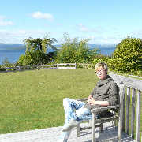

名字:
chen lanson
性别:男

介绍:金融/外汇分析师/历史/吉他/古典/人像摄影/野外徒步/独自旅行/油画
问题
答案
新建于:2016-03-28 01:39:51 PM，更新于2016-03-28 01:39:51 PM
Pre上一页
Next下一页
跳页:
正文: 试从摄影师的角度讲讲，如何逗你的模特笑。
首先，切忌数“一二三笑”，这是low爆了的路人照才会用的方式。正确的做法是“从摆拍中抓拍”。
什么意思？
摄影师就像导演给演员讲戏般，告诉模特，“你要走到某个位置，然后抬头，脑子里想一些开心的画面”，等等。然后你在她做的过程中用连拍来咔咔咔拍n张，从中挑选最自然的瞬间。
展示一张个人作品。当时的情况是，我让模特走过来与柱子互动，她就笑了，说我是不是对柱子有什么特殊感情。我其实脑子里也没想过为什么要使用柱子，只是把它当个普通场景道具，但我急中生智，回答她“是啊，要不你用这跟柱子跳段钢管舞吧，哈哈”，她听到后笑得不行，我便抓拍到了这张。
Pre上一页
Next下一页
跳页: